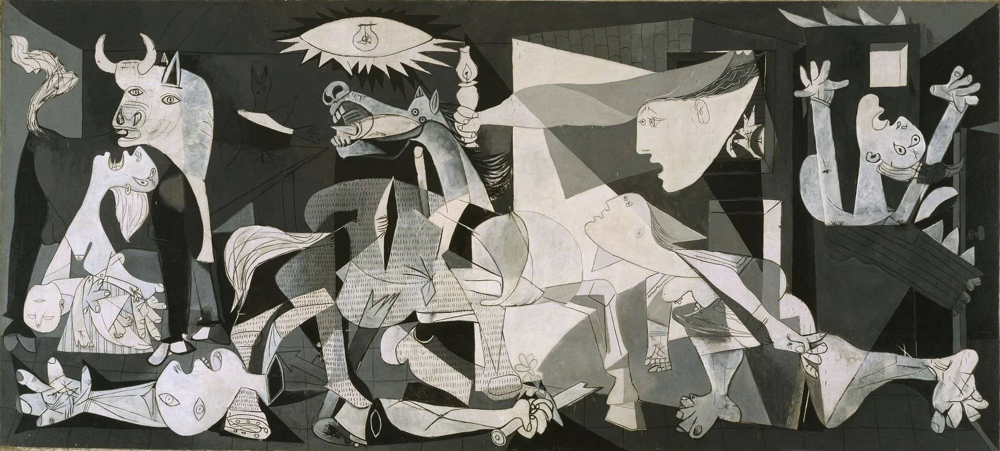
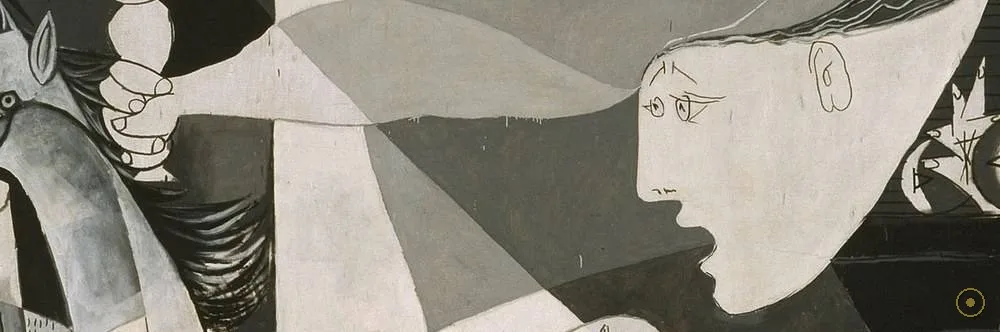
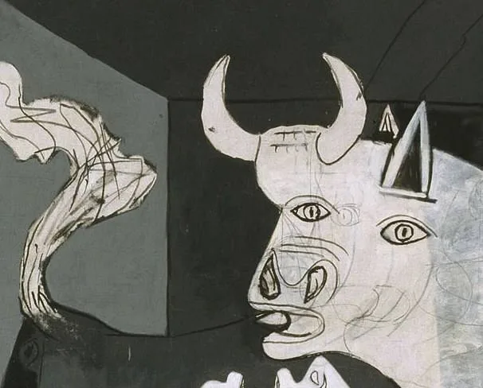
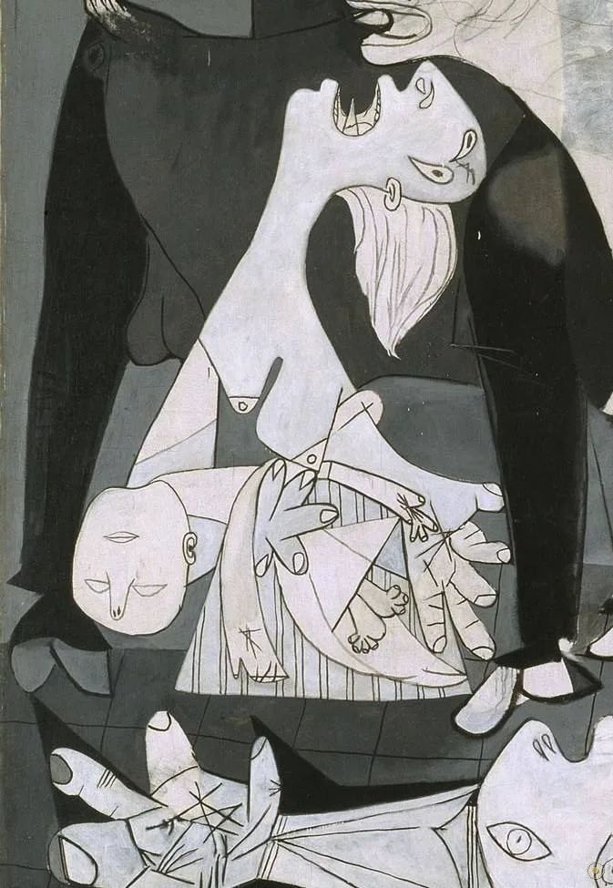
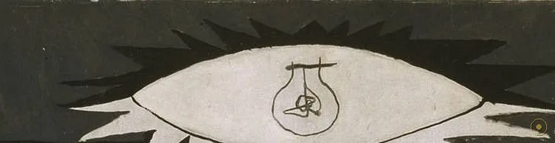
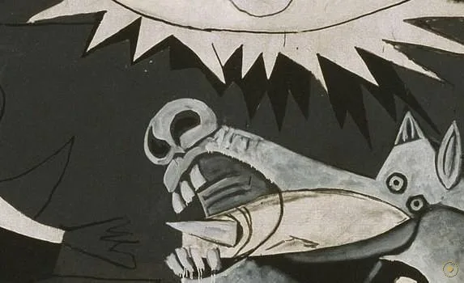
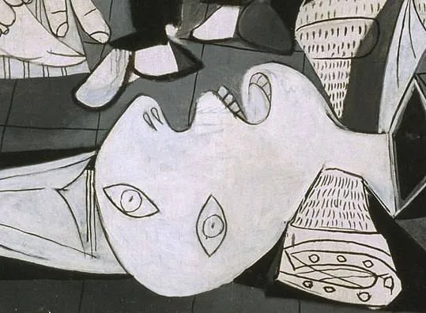
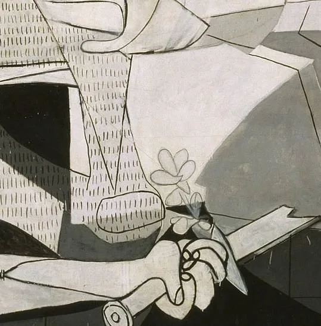
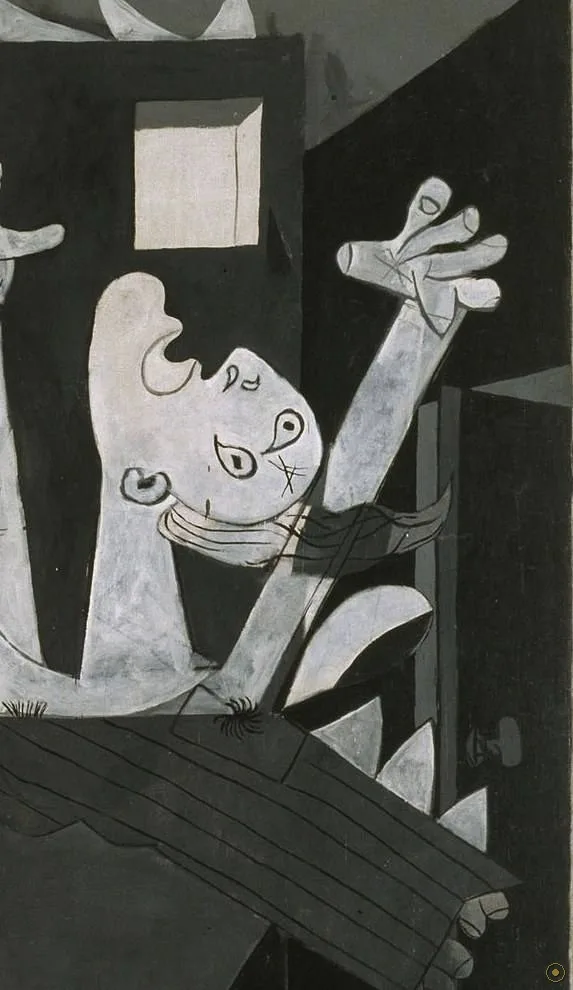

西班牙巴斯克小镇格尔尼卡，一个再普通不过的星期一——人们在集市上做买卖，直到轰炸机的影子盖过屋顶。
下午四点半开始，德国「秃鹰军团」与意大利航空军团的飞机对这座无设防的小镇轮番轰炸、扫射，持续了约三个小时；镇中心的建筑烧了三天。遇害人数至今没有定论：巴斯克政府当年统计逾一千六百人，后世多数研究认为在一百五十至三百人之间——历史在数字上撕开了一道缝。当时毕加索人在巴黎，几天后从报纸上读到报道；5月1日，他画下了第一张草图。
这并不是一份「画战争」的委托。巴黎世界博览会西班牙馆的壁画订单早在轰炸之前就已敲定，题材原本可以平淡无奇。是格尔尼卡的新闻让毕加索把整个订单让给了这座小镇：他彻底放弃了色彩，全画只用黑、灰、白三色——据记载，有人问他为什么，他回答：这就是报纸照片的颜色（此说流传甚广，出处存疑）。他在这幅三米五高、七米八宽的画布上工作了约六周。
所以这一页不打算给你一个「看懂了」的答案——连毕加索本人都拒绝充当说明书：「公牛就是公牛，马就是马」（据英译转译，他另一些场合又给出相反的解释）。让我们按他的排布从左往右走一遍：牛、母亲、灯眼、马、断剑、烛火、坠楼的人、举臂的人、着火的人。注意两件事：全画没有天空，也没有一条地面线。
—— 巴勃罗·毕加索，1945 年答美国记者耶罗姆·塞克勒（据英译转译）
在本页左下角，可以点亮一支与这幅画同龄的战歌。
从左到右读：哭声越来越高，光源越来越假，而废墟正中央握着一朵小花。

点击画面中的 ✦ 光点 查看画面细节 · 图片为低分辨率转载，作品著作权仍在保护期内
它六周画成，巡回世界四十四年，回家时已是全球反战的图腾。
1937 年 1 月 · 巴黎
西班牙共和国政府为同年夏天巴黎世界博览会的西班牙馆向毕加索订下壁画（展馆由建筑师何塞普·路易斯·塞特设计）。毕加索长期拖着不动笔，年初只交出了一组讽刺佛朗哥的版画《佛朗哥的梦与谎言》。据他本人后来说，到 4 月底他「已经开始怀疑这幅画能不能画成」——直到 4 月 26 日格尔尼卡的新闻见报。
➤1937.5.1 → 6 月初 · 六个星期
5 月 1 日第一张草图落笔，此后约六周，毕加索在画布上反复推倒重来。摄影师多拉·玛尔——他的伴侣与合作者——用相机记录了画布的八个状态，让今天的人能逐帧看到这幅画的诞生：马的方案、举灯手臂的位置、母亲的泪痕都在中途被推翻。这也是艺术史上第一幅「带着自己的纪录片出生」的大画。6 月初完成，随即运往世博会。
➤1937.7 → 1981 → 1992
1937 年 7 月，画在巴黎世博会西班牙馆首次公展，对面是考尔德为纪念阿尔马登水银矿工人做的《水银喷泉》。战后，毕加索把它托付给纽约现代艺术博物馆（MoMA），条件是西班牙恢复公共自由与民主之后才能回国——它因此在世界各地巡回多年。1981 年 10 月 25 日，画家百年诞辰之日，画终于运抵马德里；1992 年起藏于雷纳·索菲娅国家艺术中心博物馆的专厅。

真事一 · 它是第一幅「带着纪录片出生」的名画。多拉·玛尔在六个星期里拍下画布的八个阶段，今天在雷纳·索菲娅的展厅里就能逐帧观看这幅画的生长：最初的方案里没有电灯之眼，马头一度朝向另一边，举烛的女人位置改过不止一次。画布上的每一次反悔都有底片为证——这在大画史上几乎绝无仅有。
真事二 · 毕加索拒绝当这幅画的说明书。1945 年他对美国记者耶罗姆·塞克勒解释过：马代表人民，公牛曾被他一次说成「暴力与黑暗」，两天后他又去信更正；而「公牛就是公牛」这句同样出自他口。同一个符号，艺术家本人给出过互相矛盾的说法——他后来干脆说：画就是画，是一幅「有意为之的 Propaganda 作品」之外的东西。这层「拒绝说明」，后来成了现代艺术最著名的姿态之一。
真事三 · 它差点没能回家，回家后也不再旅行。毕加索的遗愿是：西班牙恢复公共自由与民主制度之前，画留在 MoMA。1981 年归国时，这幅脆弱的大画被装进特制框架吊运；1974 年它在 MoMA 曾被人喷红漆抗议（事后清除了损伤），此后修复团队明确表示不宜长途巡展——格尔尼卡镇多次申请借展，馆方均以保存条件为由婉拒。今天它被钉死在马德里的专厅里，成为一座「不再移动的纪念碑」。
※ 遇害人数、德军军官问答轶事、「颜色＝报纸照片」等说法存在不同版本或学术争议；引文据英译转译，措辞或因译本而异。
把画面拆开看：每个人物都在喊，只有公牛在看，只有花在开。

全画唯一不喊的角色。暴力与黑暗？西班牙本身？毕加索的私化身？——他两种说法都给过。

头颅折断般后仰，舌头是尖刺，眼泪是一根根线。没有神来接住遗体。

灯泡做瞳孔，光线做睫毛。白昼被换成冷光灯，所有惊呼都朝它排列。

毕加索亲口认可的一处解读：「马代表人民。」躯干上还留着报纸的网点。

头盔还在，眼睛睁着，身躯断成几何碎片，掌心带着钉痕般的印记。

断剑握在死者手里，剑柄上开出一朵小花——毕加索把它画得只有这么大。
从窗口探进半身，与电灯之眼一冷一暖。全画唯一的闭眼者。

被嵌进棺椁般的窗框，火焰的锯齿吞掉半个身体——喊声在这里戛然而止。
格尔尼卡不是孤例：1930 年代的西班牙内战是欧洲法西斯势力的试验场，德国秃鹰军团与意大利航空军团直接参战，对平民城镇的无差别轰炸在此被系统化。四年后的鹿特丹、华沙、伦敦将逐一重演格尔尼卡的下午。毕加索画下的不只是一个小镇，而是预告了整个二十世纪中叶的战争形态——从这一刻起，战争的主要受害者变成了平民。
全画没有任何颜色——这是毕加索刻意为之：新闻照片是黑白的，他要让这幅画「像报纸一样不可辩驳」。也有人补充另一层：此时他刚走出 1935 年前后的创作危机，黑白灰正是他私人神话（牛头怪、斗牛、哀悼）的既有语言。可以确定的是：色彩被他视为这幅画的敌人。为世博会展出时，据说还有参观者在画前喊过「给画上点颜色」——毕加索没有让步。
少年毕加索临摹过戈雅，四十年后他把戈雅的《1808年5月3日》接了过来：同样的平民、同样的行刑与屠杀、同样「把暴力画成新闻」的立场。马匹的嘶喊、举臂的姿势、灯火下的死难——「格尔尼卡」的字里行间全是《五月三日》的回声。艺术史常把这两幅画并列为西班牙绘画的两座反战纪念碑：戈雅画枪毙，毕加索画轰炸——从枪到炸弹，正好一步跨进二十世纪。
1955 年起，一幅由纳尔逊·洛克菲勒委托织造的全尺寸挂毯复制品开始巡回展出，1985 年起悬挂在纽约联合国总部入口——各国政要在谈判前都会从它面前走过。2003 年 2 月，美国国务卿鲍威尔在挂毯前发言时，它被布帘遮住（联合国解释为「电视画面背景更中性」，媒体报道普遍称为「遮画事件」）。从世博会展馆到反战游行标语，《格尔尼卡》完成了它最矛盾的旅程：一幅拒绝说明的画，成了所有人都能读懂的画。
西班牙共和国政府为巴黎世博会西班牙馆向毕加索订下壁画；毕加索迟迟未动笔。
格尔尼卡遭德意军团轰炸；数日后毕加索从报纸读到消息，5 月 1 日落第一张草图。
约六周画成；7 月在巴黎世博会西班牙馆首次公展，对面是考尔德的《水银喷泉》。
依毕加索遗愿寄存纽约 MoMA 并巡回各地；西班牙民主化后，1981.10.25 画家百年诞辰归国。
藏于马德里雷纳·索菲娅国家艺术中心博物馆专厅；联合国总部悬挂其全尺寸挂毯复制品。